The accesstocare has 3 functions that return
ggplot/ggiraph plots. They are primarily meant
to keep all of the examples consistent and easier to change. They can
also be used in an interactive R session, or in your own data
product.
The included plots are:
atc_plot_hospitals() returns a scatter plot comparing
Hospital vs Population counts in a given county.atc_plot_us_map() returns a “hexagon” map of the USA,
which includes Hawaii, Alaska, and DC. It overlays data from the Access
To Care analysis.atc_plot_state_map() returns a plot with actual shape
of the state, and highlights each county with a color. The color will
depend on which variable is being used to plot.The output atc_plot_us_map() function defaults to
highlight the difference in the population count per state:
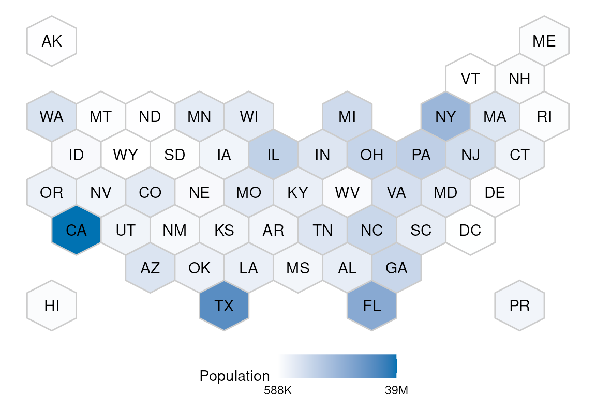
To display a different metric, pass the variable
argument. This example shows how to plot the number of counties from
each state that are undeserved:
atc_plot_us_map("below")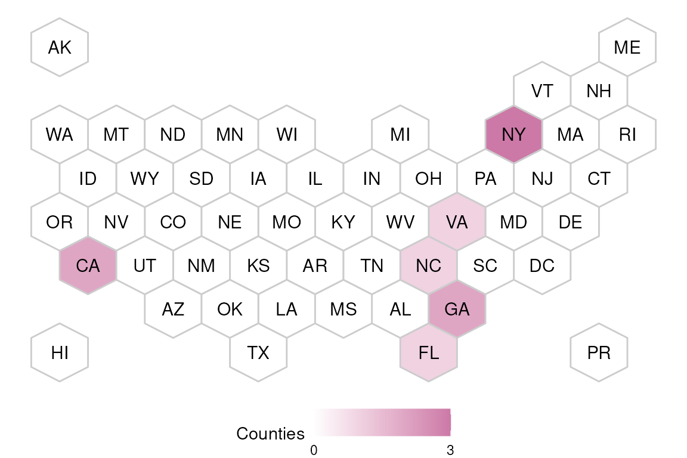
The colors for the hospitals and population
variables can be customized:
atc_plot_us_map("hospitals",
colors = list(high = "orange", low = "blue")
)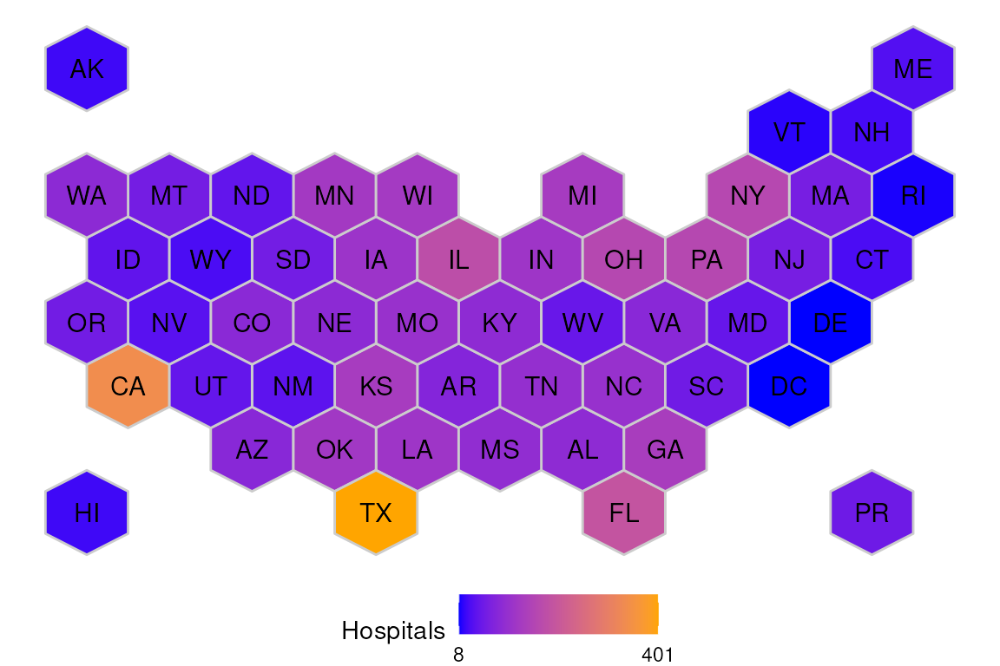
To try out the interactive version of the map, use
ggiraph::girafe(). And pass the map’s output as the
ggobj argument of that function:
ggiraph::girafe(ggobj = atc_plot_us_map())The output of atc_plot_state_map() defaults to
displaying the shape of every individual county. The plot will display
if the county has the appropriate number of hospitals, or if it has
more, or if it has less than expected, based on linear model
boundaries.
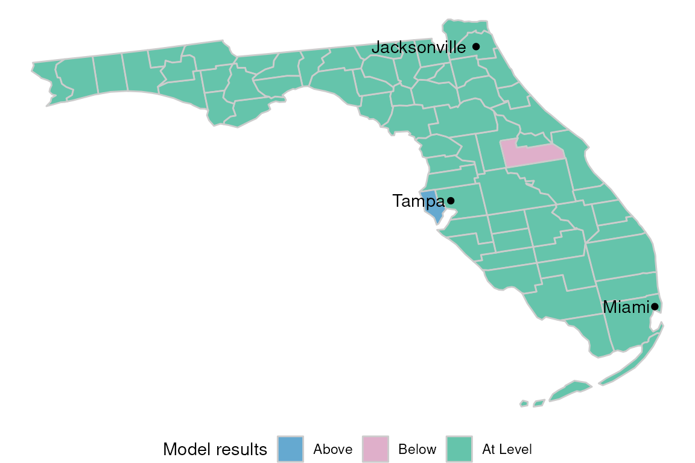
To view a given state’s results, pass the name as the
state argument of the function:
atc_plot_state_map("New York")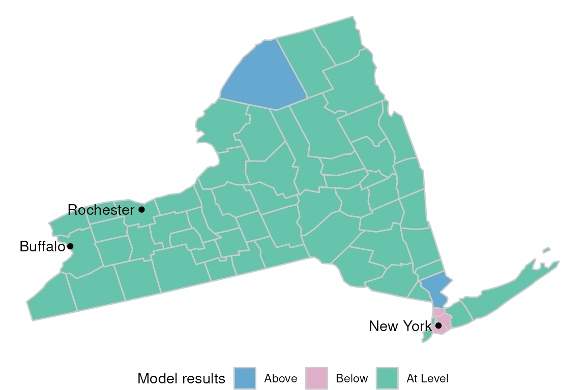
The status colors can be customized by passing the
model_color argument:
atc_plot_state_map("New York",
model_colors = list(above = "blue", below = "orange", ok = "white")
)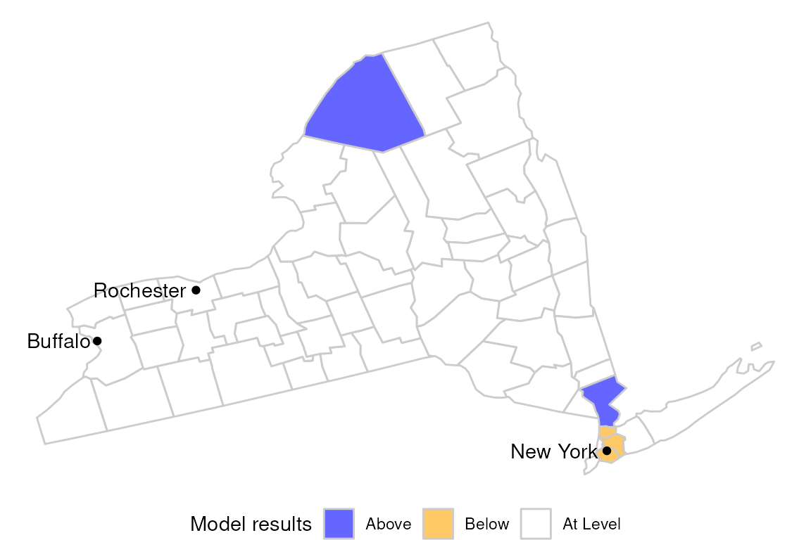
The hospitals, and population variables are
also available for plotting. Pass the variable argument to
see:
atc_plot_state_map("New York",
variable = "population"
)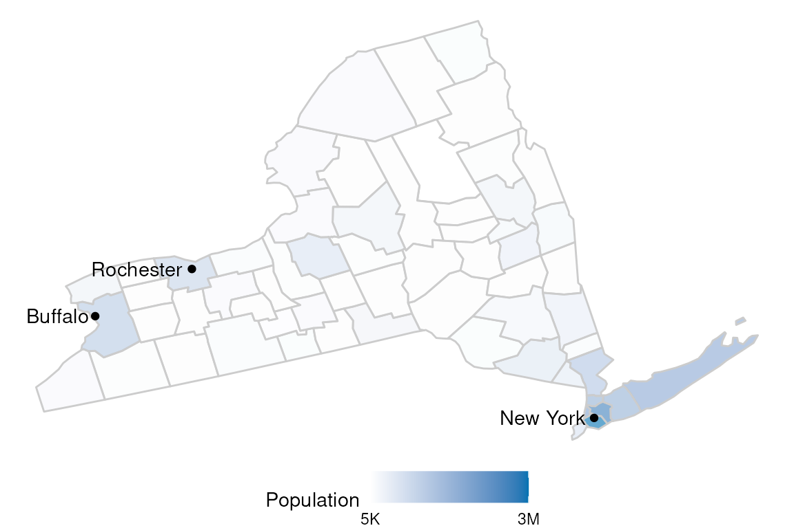
The colors of the continuous variables can also be customized using
the color argument:
atc_plot_state_map("New York",
variable = "population",
colors = list(low = "orange", high = "blue")
)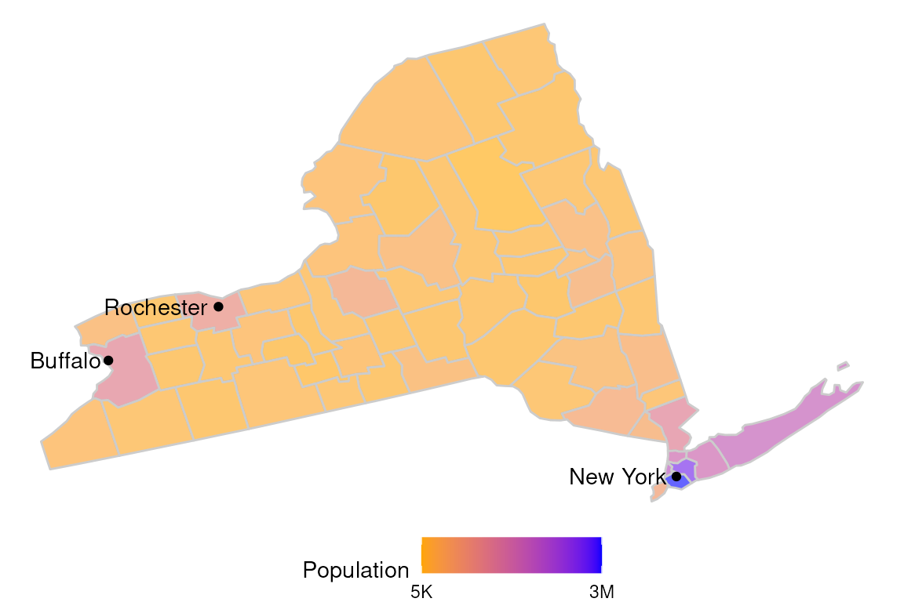
The display of more or less of the most populated cities can be
controlled using the top_cities argument.
atc_plot_state_map("New York", top_cities = 6)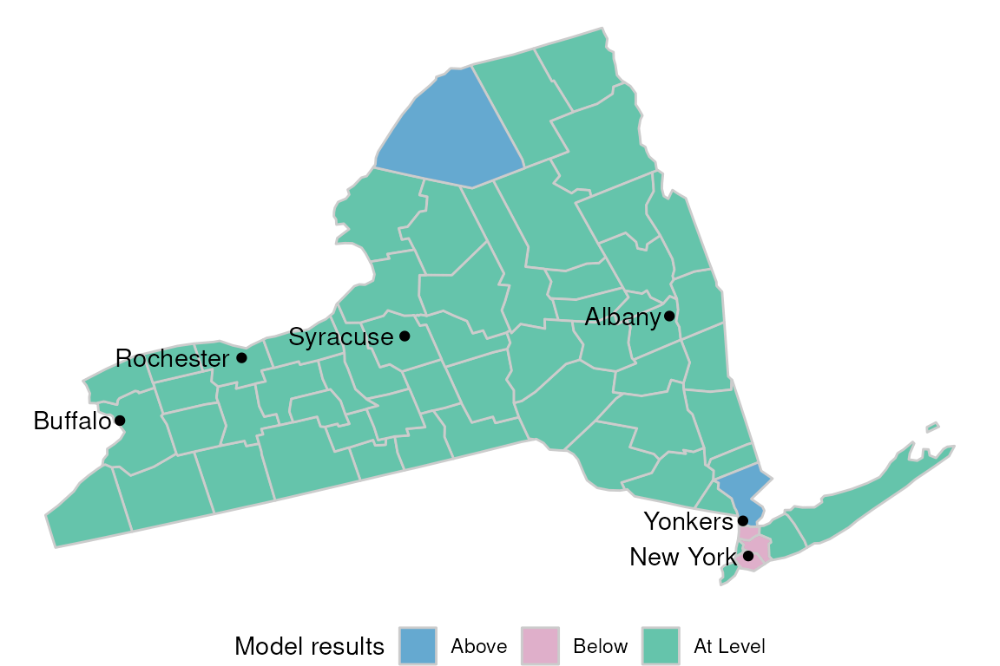
To get a map of every county in the US, pass All US to
the state argument:
atc_plot_state_map("All US", top_cities = 0)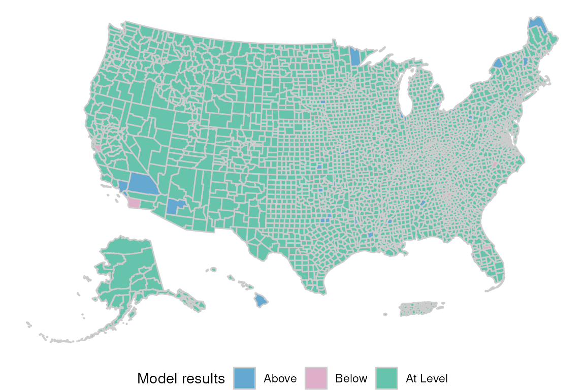
To try out the interactive version of the map, use
ggiraph::girafe(). And pass the map’s output as the
ggobj argument of that function:
ggiraph::girafe(ggobj = atc_plot_state_map())The atc_plot_hospitals() function displays a scatter
plot comparing Hospitals to Population for all the counties in the
US.
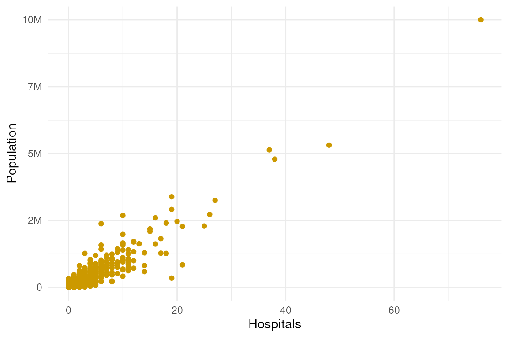
Overlay the upper and lower bound of the linear model using
show_model_results:
atc_plot_hospitals(show_model_results = TRUE)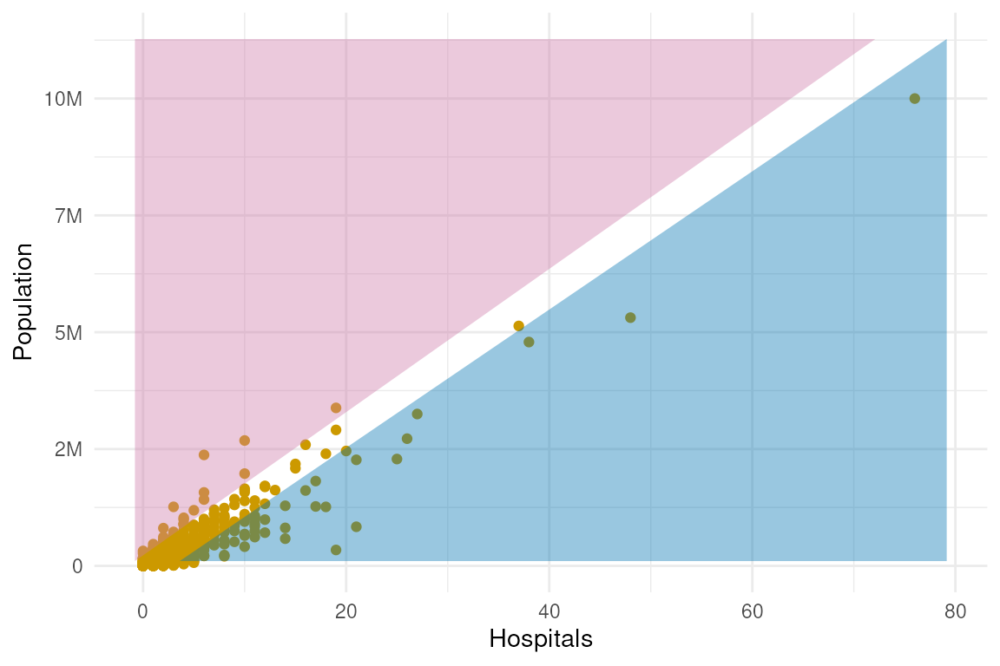
The bound colors can be customized by modifying the
model_colors argument:
atc_plot_hospitals(
show_model_results = TRUE,
model_colors = list(above = "green", below = "orange")
)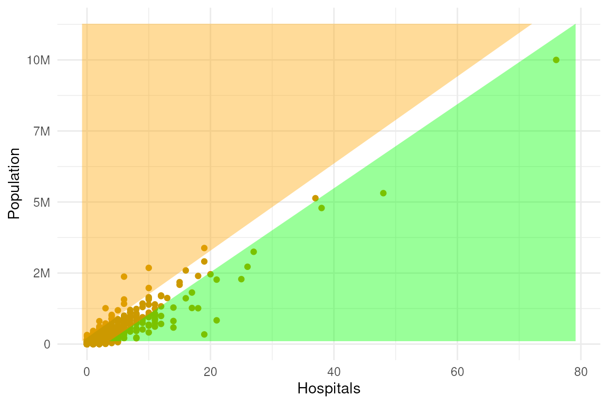
To try out the interactive version of the map, use
ggiraph::girafe(). And pass the map’s output as the
ggobj argument of that function:
ggiraph::girafe(ggobj = atc_plot_hospitals())